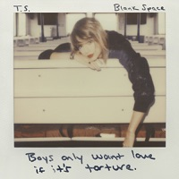
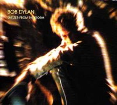
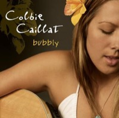
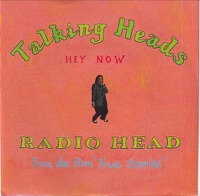
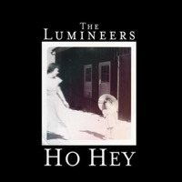
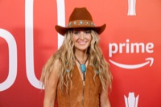
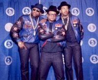

-

Taylor Swift used a line from “Blank Space” on party favors at her wedding to Travis Kelce: “So it's gonna be forever...” It's Kelce's favorite Taylor Swift song. -

Bob Dylan helped popularize the concept of “burnout” in his 1975 song “Shelter From the Storm” when he sang: “I was burned out from exhaustion, buried in the hail.” That's how many Americans were feeling at the time as they worked harder for less pay. -

Colbie Caillat sang “Bubbly” when she auditioned for American Idol in 2004, but was sent packing. Three years later it became a big hit when she released it as her first single — the song spent 19 weeks at #1 on the Adult Contemporary chart. -

Stephen Tobolowsky, who played Ned Ryerson in Groundhog Day, inspired the Talking Heads song “Radio Head.” Tobolowsky, who worked on David Byrne's film True Stories, claimed to have telepathic powers.
-

The Lumineers crashed the nu-folk revival of the 2010s with their stomp-and-clap anthem “Ho Hey.” The deceptively upbeat song about unrequited love introduced a winning formula of pairing melancholy lyrics with feel-good melodies. The hits “Ophelia” and “Cleopatra” followed. - Joni Mitchell stands out for her elegant songs rich in allegory and feeling. Her biggest hit was “Help Me,” but songs like “Big Yellow Taxi” and “The Circle Game” hold a place in the pantheon of singer/songwriter favorites.
-

Lainey Wilson, a country-music singer with a penchant for bell-bottoms, started her music career as a Hannah Montana impersonator before she hit it big in 2021 with her breakthrough single, “Things A Man Oughta Know” — a song she wrote while she was hungover. -

Run-D.M.C. broke down barriers and brought rap into the mainstream with songs like “It's Like That” and “My Adidas.” Their Aerosmith collaboration “Walk This Way” showed how rap and rock could blend together and find a common audience.